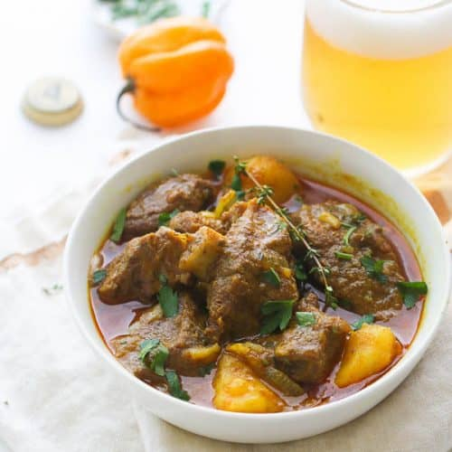

Curry Goat
Description
Curry Goat is a mouthwatering dish originating from the vibrant cuisine of the Caribbean.
Tender chunks of goat meat are marinated in a flavorful blend of curry powder, ginger, garlic, and spices.
The meat is then browned to perfection, creating a rich exterior that locks in the succulent juices.
Simmered with tomatoes, potatoes, and spices, the curry sauce becomes thick and luscious, coating the tender meat.
The slow cooking process ensures tender, melt-in-your-mouth goodness, as the flavors meld together to create a hearty and authentic Caribbean experience.
erved with rice, roti, or bread, Curry Goat is a celebration of flavors that transports you to the sunny shores of the Caribbean.
Ingredients
- 2 pounds (900g) goat meat, cut into chunks
- 2 tablespoons curry powder
- 1 onion, finely chopped
- 4 cloves of garlic, minced
- 1 tablespoon ginger, grated
- 2 tomatoes, diced
- 2 potatoes, peeled and cubed
- 1 scotch bonnet pepper (optional, for heat)
- 2 tablespoons vegetable oil
- 1 tablespoon all-purpose flour
- 1 tablespoon ground cumin
- 1 tablespoon ground coriander
- 1 tablespoon paprika
- 1 teaspoon turmeric
- 1 teaspoon thyme leaves
- 2 cups vegetable or beef broth
- Salt and pepper to taste
- Fresh cilantro, chopped (for garnish)
Steps
- In a large bowl, combine the goat meat, curry powder, salt, and pepper. Mix well to coat the meat evenly with the curry powder. Let it marinate for at least 30 minutes or overnight in the refrigerator for better flavor.
- Heat the vegetable oil in a large, heavy-bottomed pot over medium heat. Add the marinated goat meat and brown it on all sides. Remove the meat from the pot and set it aside.
- In the same pot, add the chopped onion, minced garlic, and grated ginger. Sauté until the onion becomes translucent and fragrant.
- Add the diced tomatoes and cook for a few minutes until they soften.
- Return the browned goat meat to the pot. Add the potatoes, scotch bonnet pepper (if using), flour, cumin, coriander, paprika, turmeric, and thyme leaves. Stir well to combine all the ingredients.
- Pour in the vegetable or beef broth, ensuring that the meat and potatoes are fully submerged. Bring the mixture to a boil, then reduce the heat to low. Cover the pot and let it simmer for about 2-3 hours or until the goat meat becomes tender and the flavors meld together. Stir occasionally and add more broth if needed.
- Once the meat is tender, taste and adjust the seasoning with salt and pepper according to your preference.
- Remove the scotch bonnet pepper from the pot if you used it for heat. Garnish the curry goat with fresh cilantro.
- Serve the curry goat hot with steamed rice, roti, or bread. Enjoy the delightful flavors of this traditional Caribbean dish!